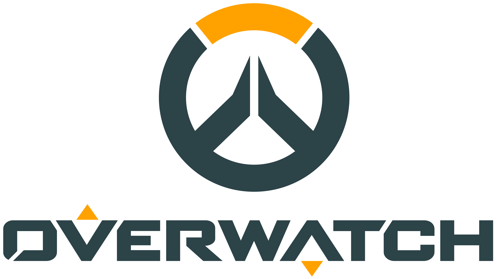

Overwatch is a 5v5 hero-based shooter game developed by Blizzard Entertainment.
In Overwatch, players control heroes with unique abilities and work together in a team-based environment to achieve objectives. There are various game modes with different objective, they include:
Each team selects five heroes to play from the roles of tank, damage, and support. Each team has one tank, two damage, and two support.
Each team also gets to ban heroes before the match begins. In ranked select heros and four heroes are banned with a maximum of 2 heroes per role. In esports the hero ban system is different. Each team gets one ban and teams cannot ban heroes from the same role.
In Overwatch esports, matches are typically a best-of-five format, however the grand finals pf a tournament are ususally best-of-seven. Matches always start on the control gamemode, ususally on a prechosen map. After map one the losing team chooses the next map with each map being playable once and gamemodes only being playable once until all modes have been played.

Valorant is a 5v5 tactical fps shooter developed by Riot Games.
In Valorant, players work as a team to clear objectives and eiter eliminate the opposing team or plant the spike. Valorant follows an attacker/defender format where one team pushes a site and one team defends the site. Attackers work to gain map control, eleimnate defenders and hit sites in order to plant the spike. Defendes try to hold sites, find where attackers are coming from, and prevent the spike from being planted. If attakers plant the spike defenders must retake the site and defuse the spike
Each team selects five agents to play from the roles of duelist, controller, sentinel, and initiator. There is no limit to how many agents from each role can be played on a team. The basic function of each role is as follows:
In Valorant esports, matches are typically a best-of-three format while the grnad finals are a best-of-five format, with each map being played in a best-of-25 rounds format. One team starts on attack and one starts on defense with teams swapping after 12 rounds. The first team to win 13 rounds wins the map. If the match is tied at 12-12, overtime is with a win by 2 format.
Back to the main page